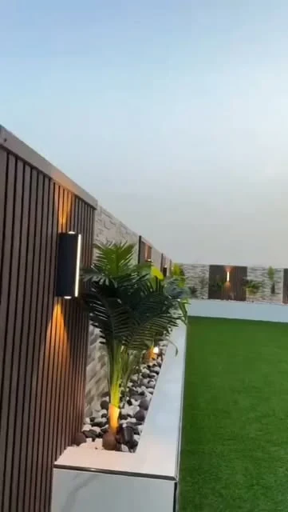
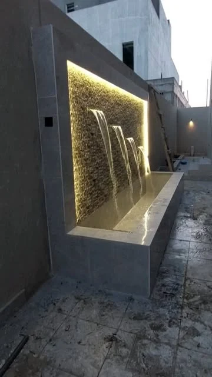
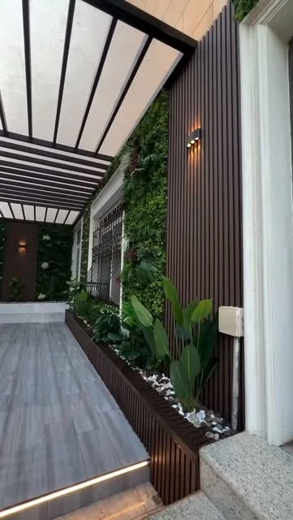

تنسيق وزراعة الحدائق
توزيع النباتات والأحواض والعشب بحسب المساحة وطبيعة الاستخدام، مع مناقشة الري ومتطلبات العناية.

الدمام والخبر
تنسيق حدائق وجلسات وشلالات في الدمام والخبر. استكشف حلول المساحات الخارجية، من أول نبتة إلى تفاصيل الجلسة.
حديقة · جلسة · لحظات أجمل

كل عنصر له مكانه

الخدمات والتفاصيل
زهرة الحدائق لتنسيق الحدائق والمساحات الخارجية. تشمل الخدمات المنشورة الزراعة والعشب والري والجلسات والمظلات والعناصر المائية، مع نطاق خدمة معلن في الدمام والخبر والقطيف والجبيل.
توزيع النباتات والأحواض والعشب بحسب المساحة وطبيعة الاستخدام، مع مناقشة الري ومتطلبات العناية.
عناصر مائية للمداخل والجلسات والحدائق، تُراجع مواقعها ومقاساتها ومتطلبات تشغيلها قبل التنفيذ.
تنسيق أماكن الجلوس والظل وربطها بالممرات والعناصر المحيطة لتكوين مساحة خارجية متكاملة.
المعرض
نماذج مختارة من صور النشاط المنشورة. اختر التصنيف وافتح الصورة لمشاهدة التفاصيل.
7 صور في المعرض
بداية أوضح
جهّز هذه المعلومات لتبدأ المحادثة مع الفريق بصورة واضحة عن احتياجك.
قبل التواصل
صور عامة للمكان ومداخل الوصول ومواقع الماء والكهرباء، مع قياسات تقريبية وأمثلة للطابع المطلوب.
ابدأ بطريقة استخدام المكان وحجم المساحة، ثم ناقش توزيع الزراعة والجلوس والظل والري مع الفريق.
اختر الخدمة وأضف التفاصيل التي تساعد الفريق على فهم طلبك. ستظهر لك رسالة جاهزة للمراجعة قبل فتح واتساب.
الدمام والخبر
+966546951125